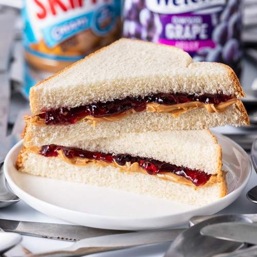

Peanut Butter and Jelly

Description
A Peanut Butter and Jelly sandwich is a longtime snack or light lunch for American kids and adults.
The ingredients are simple and a PB&J can be made in little time.
Ingredients
- Bread
- Jelly (Strawberry or Grape)
- Peanut Butter
Steps
- lay out two slices of bread
- spread peanut butter on one slice
- spread jelly on the other slice of bread
- Combine the two slices of bread
- Enjoy!